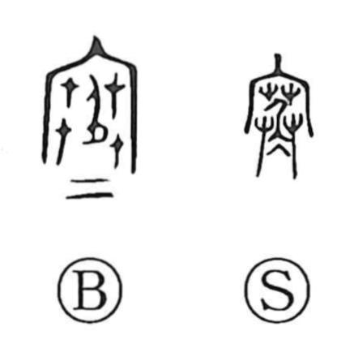

寒

Kun: samui | On: kan
cold ・ chilly ・ lonely ・ poor
Explanation
In seal script, the character shows a dwelling with a roof completely thatched in grass, people living inside, and ice beneath—a picture of insulating a house to ward off the cold. From this image arises the core sense “cold, chilly,” which later extends metaphorically to human states such as loneliness and poverty. Bronze inscriptions add two short horizontal strokes at the bottom, suggesting floor matting. Although the modern form resembles the upper part of 塞, this graph stems from the image of sheltering against ice.